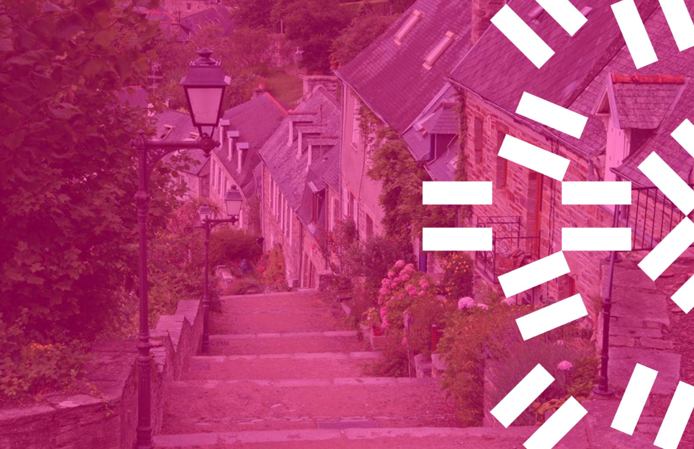
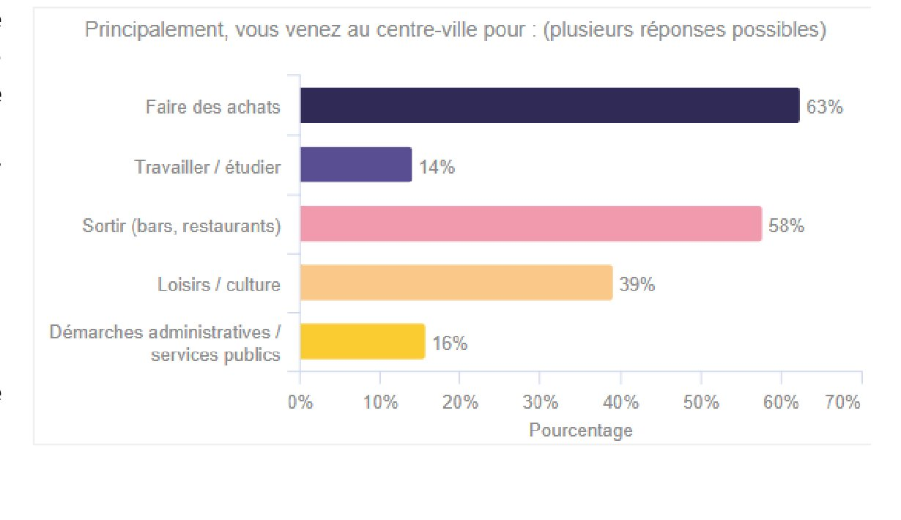
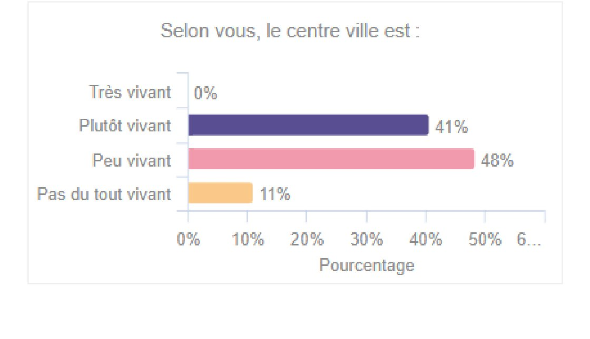
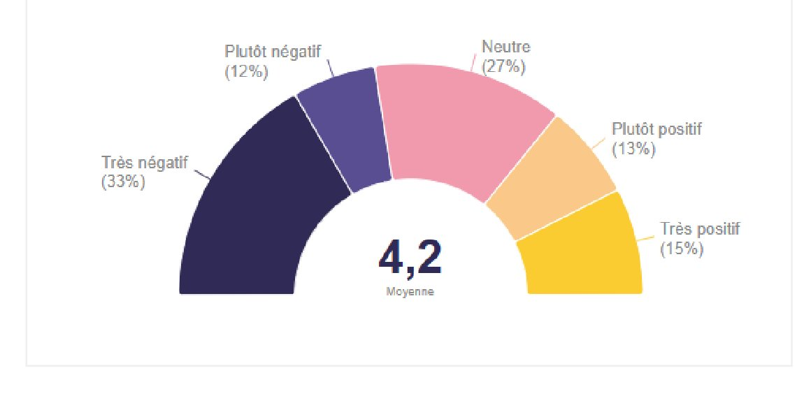
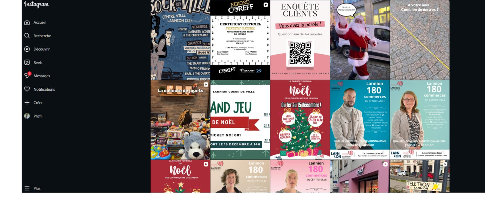
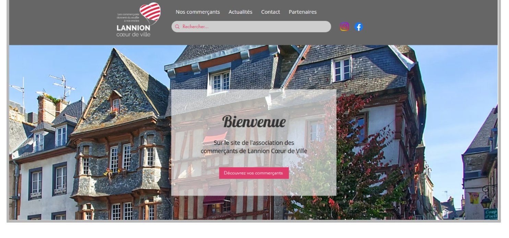
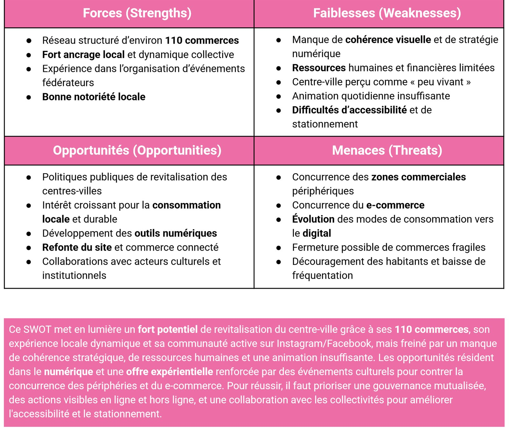

Lannion Cœur de Ville Diagnostic & stratégie
Une association de commerçants veut redonner vie au centre-ville de Lannion. Avant de créer quoi que ce soit, on est allés écouter le terrain.

Redonner envie de venir en ville.
Depuis 1996, l'association anime le centre de Lannion : braderies, village de Noël… Mais la fréquentation baisse et sa communication manque d'unité. Notre mission : un diagnostic complet, puis des recommandations concrètes.
Une enquête auprès des habitants



Actifs, mais dispersés


Un fort potentiel, freiné

Ce qu'on a proposé
Une identité et un site neufs
Une charte graphique commune et un site plus clair. C'est la suite de notre accompagnement.
Un rendez-vous estival
Un soir par semaine l'été, des animations gratuites, sur le modèle des Mardis de Paimpol.
Un concours de vitrines
Simple et peu coûteux : les habitants votent, les commerçants soignent leurs vitrines.
Une info plus lisible
Agenda des événements, commerces filtrables, contenus pensés pour chaque réseau.
Une enquête de terrain pèse plus lourd qu'une intuition face à un client.
Chaque choix graphique de la suite s'appuie sur un constat de cette étude.
Rendre un dossier à une association demande d'être clair et de justifier chaque idée.